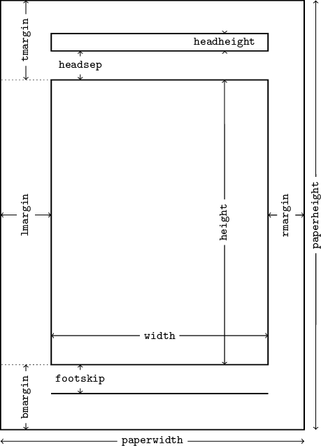
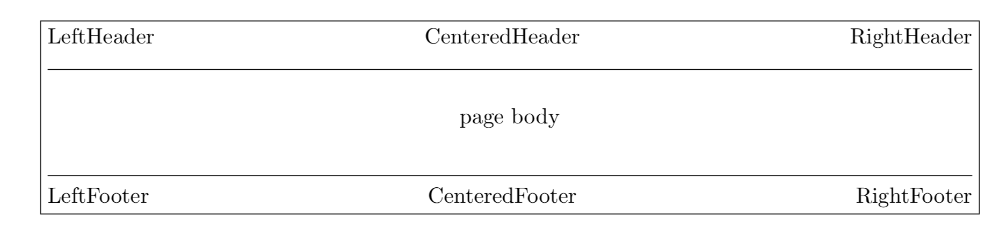
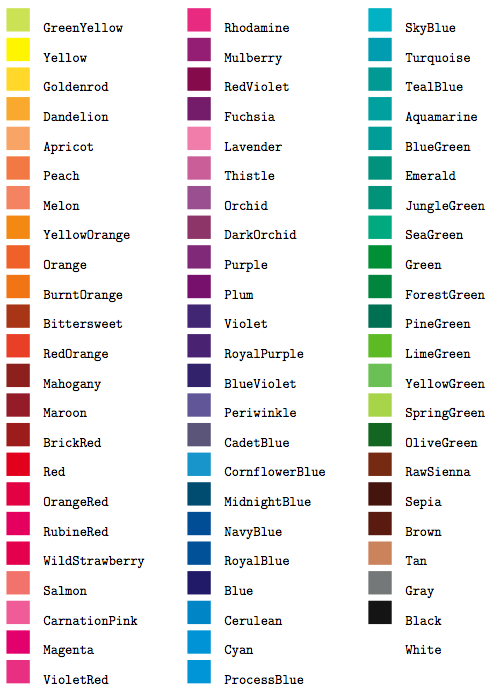

This packages provides a flexible and intuitive way to customise page layout.
It implements auto-centering and auto-balancing mechanisms so that you have only to give the least description for the page layout.
Different elements can be accessed by geometry such as : paper size, margins, footnote, header and orientation.
(Have a look at the page geometry where the package is explained more deeply)
TOP 3
1. Geometry
CODE
\usepackage{geometry} 
2. Fancyhdr
Fancyhdr is an useful package to customise the page layout in particular headers and footers.
The fancyhdr macro package allows you to customize in your page headers and footers in
an easy way. (Have a look at the page fancyhdr where the package is explained more deeply)
In fact you can set :
In fact you can set :
- decorative lines in headers and footers
- headers and footers wider than the width of the text
- multi-line headers and footers
- decorative lines in headers and footers
CODE
\usepackage{fancyhdr} 
3. Xcolor
The simplest way to extend the use of colours in your laTeX document is by importing the package xcolor.
This package provides a powerful and flexible set of commands for colour manipulation within your pdf document.
It is able to understand all the different colours notations(rgb, cmyk, hsb, gray) as well as shadows or colours mixing.
(Have a look at the page xcolor where the package is explained more deeply)
(Have a look at the page xcolor where the package is explained more deeply)
CODE
\usepackage{xcolor} 
Page written by Jacopo Stucchi|